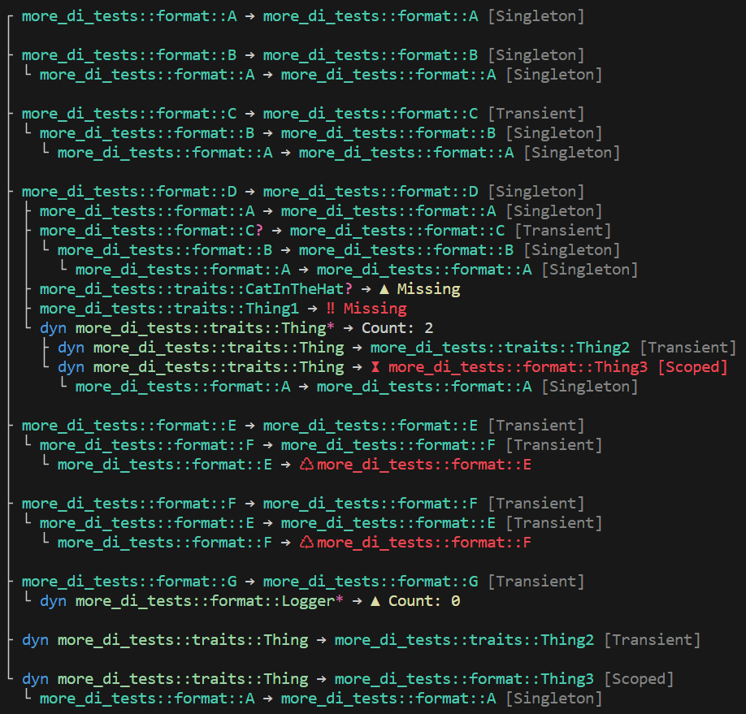

Troubleshooting
Despite numerous forms of automatic code generation and validation, it's still possible to encounter misconfiguration where it's not clear what has gone wrong. While a validation error will tell you what is wrong, it doesn't do a lot to tell you where it is wrong. In these scenarios, a picture is worth a thousand words.
In order to make it easy to understand which services have been configured and for which types, ServiceCollection implements the std::fmt::Debug trait and, when the fmt feature is enabled, it also implements the std::fmt::Display trait with terminal colorization. You might take advantage of this capability for debug output, logging, or one-off inspection.
use di::*;
#[injectable]
struct Bar;
impl Bar {
fn do_work(&self) {
println!("Hello world!");
}
}
trait Foo {
fn do_work(&self);
}
#[injectable(Foo)]
struct FooImpl {
bar: Ref<Bar>,
}
impl Foo for FooImpl {
fn do_work(&self) {
self.bar.do_work()
}
}
fn main() {
let mut services = ServiceCollection::new();
services.add(Bar::transient())
.add(FooImpl::transient());
// we can print the service collection at any time, including here:
// println!("{}\n", services);
match services.build_provider() {
Ok(provider) => {
let foo = provider.get_required::<dyn Foo>();
foo.do_work();
},
Err(validation_errors) => {
// display the validation errors and entire service collection
println!("{}\n{}", validation_errors, services);
}
}
}A distinct difference between validation and display is that validation will only show errors, whereas display can show warnings and relationships.
Display Output
Symbols
?= zero or one*= zero or more⚿= service key▲= warning‼= error♺= circular reference⧗= lifetime
Warnings
- An optional service is missing
- A list has no registered services
Errors
These are the same errors detected and raised by validation
- A required service is missing
- A service has a circular reference
- A service with the lifetime
ServiceLifetime::Singletondepends on a service with the lifetimeServiceLifetime::Scoped
Example Output
The following example demonstrates outputting an entire service hierarchy, including warnings and errors.
Colorization is supported when the fmt feature is activated
